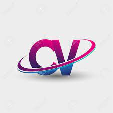

My Resume
Objective
Hi! I’m Arooj Miqdad, a passionate Computer Science student who loves exploring technology,
data, and creative problem-solving. I enjoy learning new tools and turning ideas into
real projects that help others.

Education
- Bachelor of Science in Computer Science — University of the Punjab (5th Semester)
- Intermediate in Computer Science — Punjab College (2021 – 2023)
- Matriculation — High School (2019 – 2021)
Skills
- SQL and Excel (for data handling and analysis)
- Python (for programming and AI-based tasks)
- HTML & CSS (for website development)
- Microsoft Word Specialist
- Problem-solving and teamwork
Certifications
- Microsoft Word Specialist – Certiport
- Data Analysis Certificate – Certiport
Contact us
My hobbies